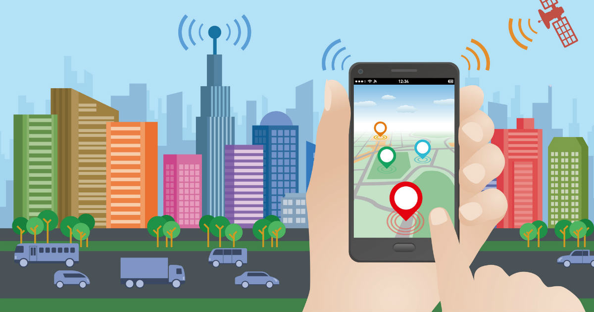
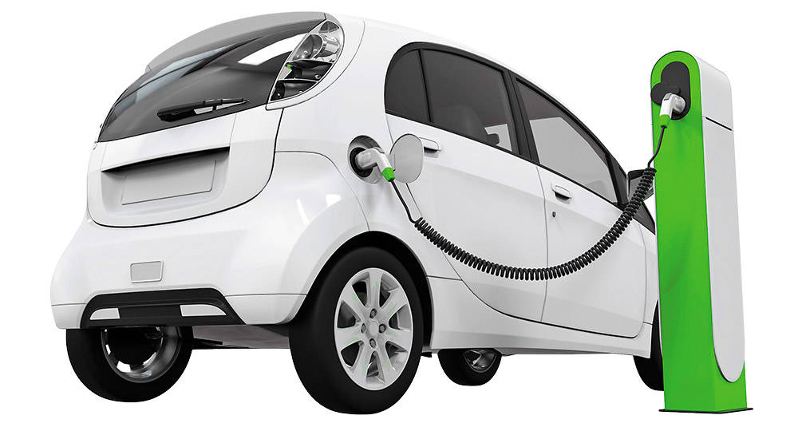
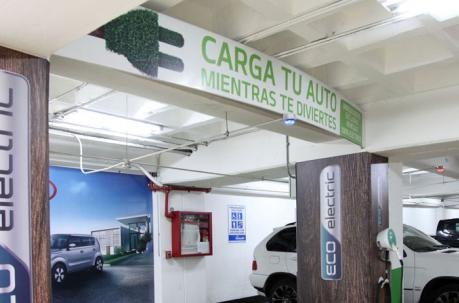

Una aplicacion que te permite acceder a infromacion de electrolineras facil y rapido

Ubicación
Localiza de forma ágil y rápido los puntos de carga.
Gestion
Administra la informacion de la App desde este sistema Web.
Rutas
Establece la ruta mas rapida desde tu ubicacion al punto de carga.

Puntos de Carga
Localiza los distintos puntos de carga para vehiculos electricos que se encuentran disponobles en el Disrtito Metropolitano de Quito
Establecer Rutas
Selecciona la electrilinera que mas se adapte a tu necesidad y la aplicacion generara la ruta mas adecuada de acuerdo a tu ubicacion para llegar a tu destino.

Electrolineras
Visualiza informacion sobre las electrolineras que se encuentren disponible en el Distrito Metropolitano de Quito en un solo lugar.